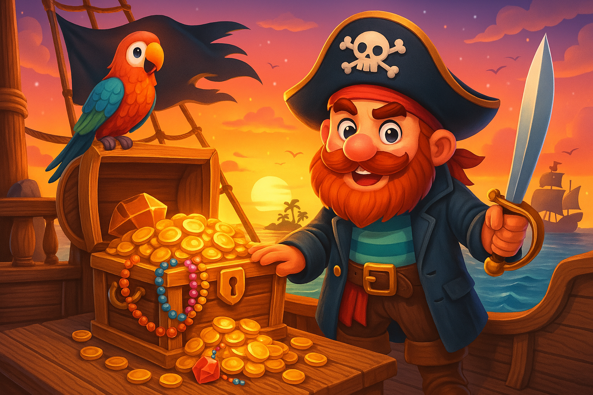

Uzak diyarlarda, mavi suların sonsuzluğa uzandığı bir okyanusta, cesur bir korsan olan Kaptan Roderic, kayıp bir hazinenin peşindeydi. Efsanelere göre, bu hazine sadece en cesur denizcilerin bulabileceği bir adada saklıydı.
Bir gün, Kaptan Roderic eski bir sandık buldu. Sandığın içinde, üzerinde bilinmeyen semboller olan eski bir harita vardı. Harita, tehlikeli sulardan, fırtınalı okyanuslardan ve deniz canavarlarından bahsediyordu. Ancak Kaptan Roderic, asla pes etmeyecek kadar cesurdu.

Günler süren yolculuktan sonra, sonunda haritadaki adaya ulaştılar. Ada, devasa palmiyeler, altın renginde kumlar ve uçsuz bucaksız mağaralarla doluydu. Kaptan Roderic, haritada gösterilen işareti takip ederek hazineyi bulmaya çok yaklaştı.
